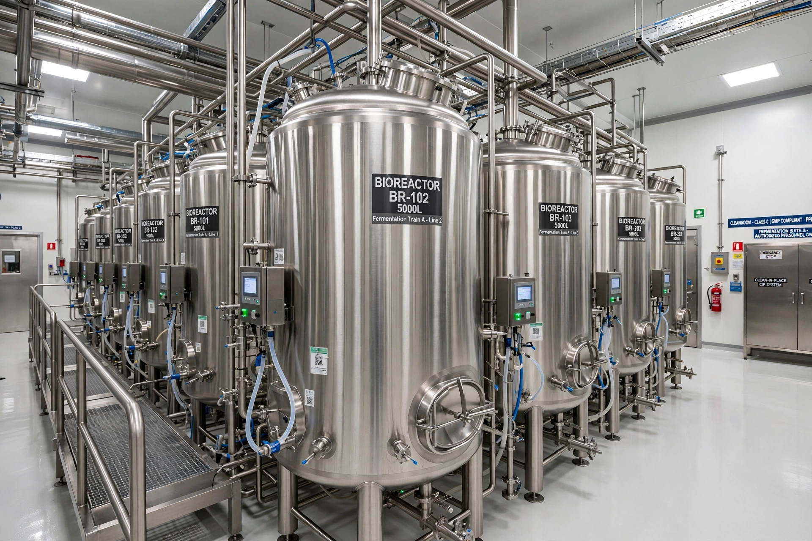

Precision fermentation is a form of synthetic biology that uses microorganisms such as yeast and fungi, engineered with specific genes, to produce targeted functional ingredients — such as proteins, enzymes, flavour molecules, vitamins, pigments, and fats — during fermentation. The products are typically identical to their animal- or plant-derived counterparts at the molecular level and are used in food, cosmetics, and industrial applications.

A host microorganism — commonly the yeast Pichia pastoris or Saccharomyces cerevisiae, filamentous fungi, or bacteria — is given DNA encoding the target compound. The engineered microbe is grown in fermenters on a feedstock such as sugar, where it secretes the product, which is then separated and purified. The technique builds on decades of industrial use: since the 1980s, most insulin and the cheese-making enzyme chymosin (rennet) have been produced by fermentation with genetically engineered microbes rather than extracted from animals.
Companies use precision fermentation to produce animal-free versions of egg-white proteins, whey and casein for dairy alternatives, heme proteins that give plant-based meats a meaty flavour, and human milk oligosaccharides. Because the outputs are molecularly identical to conventional ingredients, they can replicate the functionality of animal products without livestock farming.
The same platform produces enzymes for detergents, spider silk proteins, collagen for cosmetics, and palm-oil alternatives, among other compounds.
Scaling precision fermentation to commodity volumes requires large fermentation capacity and cheap feedstocks; cost, regulatory approval as a novel food, and consumer acceptance remain significant challenges. It is distinguished from cultivated meat, which grows animal cells directly, and from biomass fermentation, in which the microorganism itself is the product.